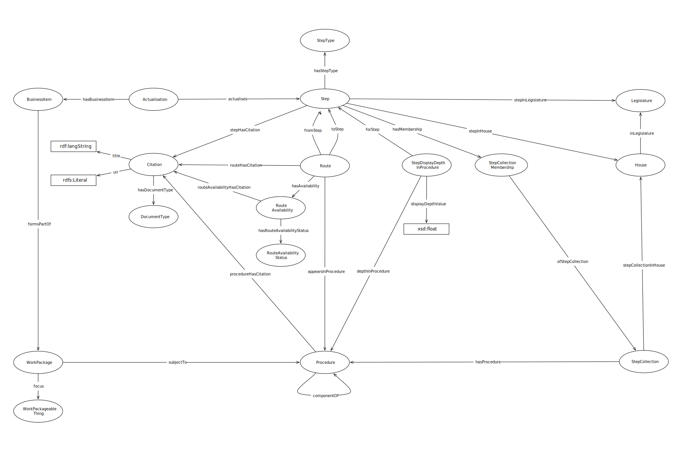

IRI: http://parliament.uk/ontologies/procedure/Availability
IRI: http://parliament.uk/ontologies/procedure/AvailabilityStatus
IRI: http://parliament.uk/ontologies/procedure/AvailableThing
IRI: http://parliament.uk/ontologies/procedure/BusinessItem
IRI: http://parliament.uk/ontologies/procedure/BusinessStep
IRI: http://parliament.uk/ontologies/procedure/CalculationStyle
IRI: http://parliament.uk/ontologies/procedure/Citation
IRI: http://parliament.uk/ontologies/procedure/CitedThingType
IRI: http://parliament.uk/ontologies/procedure/CitingThing
IRI: http://parliament.uk/ontologies/procedure/Clock
IRI: http://parliament.uk/ontologies/procedure/Event
IRI: http://parliament.uk/ontologies/procedure/House
IRI: http://parliament.uk/ontologies/procedure/Legislature
IRI: http://parliament.uk/ontologies/procedure/PaperWork
IRI: http://parliament.uk/ontologies/procedure/Path
IRI: http://parliament.uk/ontologies/procedure/ProceduralWorkPackage
IRI: http://parliament.uk/ontologies/procedure/Procedure
IRI: http://parliament.uk/ontologies/procedure/ProcedureCollection
IRI: http://parliament.uk/ontologies/procedure/Route
IRI: http://parliament.uk/ontologies/procedure/Step
IRI: http://parliament.uk/ontologies/procedure/StepCollection
IRI: http://parliament.uk/ontologies/procedure/StepDisplayDepthInProcedure
IRI: http://parliament.uk/ontologies/procedure/StepType
IRI: http://parliament.uk/ontologies/procedure/WorkPackage
IRI: http://parliament.uk/ontologies/procedure/actualises
IRI: http://parliament.uk/ontologies/procedure/availabilityOf
IRI: http://parliament.uk/ontologies/procedure/businessStepInHouse
IRI: http://parliament.uk/ontologies/procedure/businessStepInLegislature
IRI: http://parliament.uk/ontologies/procedure/cites
IRI: http://parliament.uk/ontologies/procedure/componentOf
IRI: http://parliament.uk/ontologies/procedure/depthInProcedure
IRI: http://parliament.uk/ontologies/procedure/focus
IRI: http://parliament.uk/ontologies/procedure/forBusinessStep
IRI: http://parliament.uk/ontologies/procedure/formsPartOf
IRI: http://parliament.uk/ontologies/procedure/fromStep
IRI: http://parliament.uk/ontologies/procedure/hasAvailabilityStatus
IRI: http://parliament.uk/ontologies/procedure/hasCitedThingType
IRI: http://parliament.uk/ontologies/procedure/hasStepType
IRI: http://parliament.uk/ontologies/procedure/inLegislature
IRI: http://parliament.uk/ontologies/procedure/inProcedure
IRI: http://parliament.uk/ontologies/procedure/memberOf
IRI: http://parliament.uk/ontologies/procedure/parentCitedThingType
IRI: http://parliament.uk/ontologies/procedure/parentProcedureCollection
IRI: http://parliament.uk/ontologies/procedure/parentStepCollection
IRI: http://parliament.uk/ontologies/procedure/partOf
IRI: http://parliament.uk/ontologies/procedure/proceduralWorkPackageHasCalculationStyle
IRI: http://parliament.uk/ontologies/procedure/procedureHasCalculationStyle
IRI: http://parliament.uk/ontologies/procedure/stepCollectionInHouse
IRI: http://parliament.uk/ontologies/procedure/stepCollectionInProcedure
IRI: http://parliament.uk/ontologies/procedure/subjectTo
IRI: http://parliament.uk/ontologies/procedure/takesPlaceDuring
IRI: http://parliament.uk/ontologies/procedure/toStep
IRI: http://parliament.uk/ontologies/procedure/dayCount
IRI: http://parliament.uk/ontologies/procedure/displayDepth
IRI: http://parliament.uk/ontologies/procedure/isClockFrozen
IRI: http://parliament.uk/ontologies/procedure/workPackageDayCount
This HTML document was obtained by processing the OWL ontology source code through LODE, Live OWL Documentation Environment, developed by Silvio Peroni.